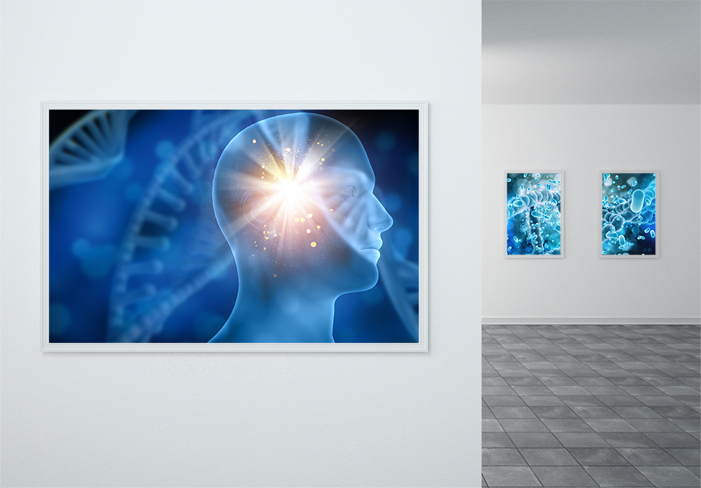
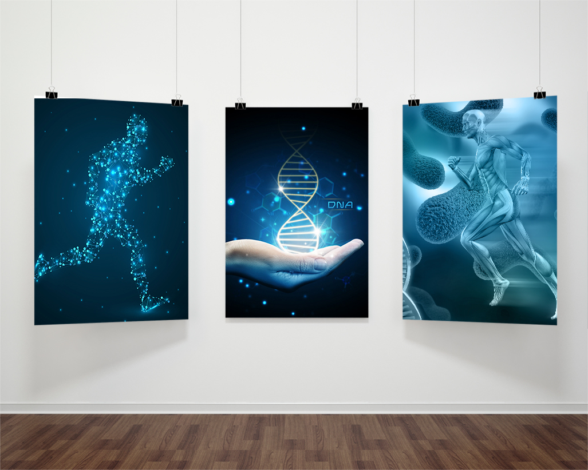
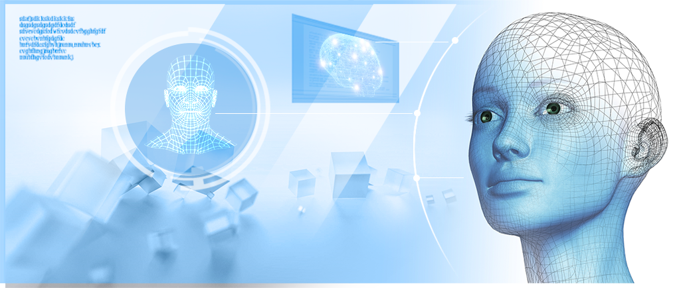

БИОПЛАЗМА, ГЕОПЛАЗМА
БИОПЛАЗМА, ГЕОПЛАЗМА И ПСИХОЭНЕРГЕТИЧЕСКИЕ
Четверг, 09 Января 2014 г
По мере развития биофизики, как науки о физических процессах в биологическом пространстве, появляется новое направление – биофизика индивидуальности. Каждый человек имеет свою уникальную биофизическую структуру, т.е. биофизическую индивидуальность. В России, в городе Уфе, в Башкирском университете это направление развивается доктором психологии, профессором Аминьевым Г. А.
Любой психический процесс – эмоции, мысли и т.д. – сопровождается изменением энергетического пространства вокруг личности. При этом изменяется структура пространства. Пространство, энергия и время взаимосвязаны. А. Бергсон первый высказывался по теории биологического времени, считая, что психическое время отличается от физического времени. С точки зрения биофизики индивидуальности или основ психоэнергетики необходимо учитывать временную структуру личности (речь идёт о познании особенностей психического времени). Психика имеет биоэнергетическое содержание, но ее состояние зависит от экзогенной гелиогеофизической среды.
Нельзя думать, что психика – это изолированная система, не реагирующая на внешние воздействия. Взаимодействие психики с экзогенной средой – космическими излучениями, магнитными бурями на Солнце, электромагнитными полями, количеством зарядов в атмосфере Земли, холодной геоплазмой Земли – являются важными составляющими в единстве: человек – Земля – Космос. В работе А.Л. Чижевского “Физические факторы исторического процесса” показана взаимосвязь солнечной активности с психическими факторами исторического процесса на Земле. Выброс солнечной плазмы, пятна на Солнце вызывают психические изменения у огромных масс людей на планете Земля.
Психоэнергетический статус отдельного человека и
масс людей в значительной степени зависит от
космических и геофизических флуктуаций.

Космическое воздействие обусловлено, прежде всего, действием Солнца, фазами Луны, процессами, происходящими в Солнечной Системе и Галактике. Такие факторы влияют на большие массы людей в целом и на отдельные личности, в частности. Все возмущения, которые происходят в Земле, отражаются, прежде всего, через геоплазму Земли на биоплазме мозга человека. Так, человек, живущий в какой-то геоаномальной зоне, может чувствовать приливы психической энергии или, наоборот, депрессию, которая может приобрести окраску психосоматического заболевания. Можно полагать, что одной из причин многих болезней является действие аномалии геоплазмы на человека в течение длительного периода его жизни. Флуктуации или возмущения в геоплазме постепенно разрушают биоэнергетику и психоэнергетику человека. Причем характеристики геоплазмы, а, значит, и биоплазмы, изменяются в зависимости от фаз активности Солнца.
Любое цивилизованное общество строилось на энергетической пирамиде, основание которой представляет энтропийная энергия естественной и техногенной природы. Далее – биологическая энергия живой природы, плодами которой мы пользуемся. Она занимает большую часть пирамиды. Вершину пирамиды представляет высокоорганизованная форма энергии – пси-энергия (рис. 1). Флуктуация энтропийного энергетического основания приведёт к сдвигам во всей пирамиде. Техногенизация общества приводит к падению психоэнергетического потенциала и его деградации. Увеличивается энтропийный базис, понижается высота вершины пирамиды. Кроме того, А.Л. Чижевский указывал на глобальность влияния экзогенных факторов солнечной активности на гео-, био- и пси-энергетику. Всплески солнечной активности расшатывают всю пирамиду, приводят к деградационным процессам, нарушают безопасность психосоциальной сферы. Происходят глубочайшие возмущения в биосфере и ноосфере (сфере разума).
Многие филососфы, психологи считают, что психические процессы лишены материальной основы, определяются только через понятия, образы и на этом строили познание психики человека. Однако, уже З. Фрейд понимал, что без энергии понять психологические процессы и нарушения в психике на атомно-молекулярном уровне невозможно, и искал основу новой парадигмы. Существующее механистическое мировоззрение не могло объяснить всех проявлений, которые происходят в пси-мире человека.
Лаплас утверждал возможность предсказания поведения детерминированной системы, при задании начальных условий. Доминировало типичное дискретное мышление, характерное для лапласовского детерминизма, корни которого мы видим у Демокрита. Утверждалась парадигма: часть является первичным, а целое – результатом сложения частей.
Дискретное мышление получает подкрепление в процессе развития техногенной цивилизации в 19-ом и начале 20-го веков и захватывает умы всех, кто развивал те или иные области естествознания. Ортодоксальный подход в биологии идет под флагом редукционизма и натурфилософии. Без оговорок утверждается, что живые организмы можно рассматривать как физико-химические машины и что все явления живого можно объяснить при помощи известных уже процессов, изученных физикой и химией (Волькенштейн, 1980). Причем, любая попытка уйти от редукционизма в биологии объявляется псевдонаучной. Время же требует новой концепции, антитетичной механистической парадигме. Новая парадигма должна не просто утверждать, что жизненные явления связаны с новым состоянием материи, не признаваемым в настоящее время физическими науками, но и конкретизировать этот ее новый статус четкими определениями. Редукционисты считают, что лучше опираться на механицизм, чем скатываться в витализм, третьего пути они не признают. Виталистический подход, действительно, являясь по сути своей умозрительной концепцией, не давал заметных позитивных результатов для понимания живого, но все-таки витализм сумел родить очень полезное для миропонимания учение о целом.
объяснения феномена биологического целого, который впервые в отечественной литературе был сформулирован А.Г. Гурвичем на строгой экспериментальной и единственно научной эпигенетической основе. А.Г. Гурвич впервые сформулировал положение о “факторе целого” для клеточной ориентации на основании движения эпителиальных клеток при развитии головного мозга позвоночных (зародышей акулы). Он сформулировал следующую теорему: “При формообразовании клетки ориентируются в своем движении так, как будто они притягиваются некоторой силовой поверхностью, совпадающей с границами окончательной поверхности”. Эта силовая поверхность динамически преформированной морфы получила название “предморфа”.
Предморфа представлена структурированным физическим вакуумом, виртуальной биоплазмой. Вакуум имеет свое время, пространство и наполнен волнами и торсионными полями. Первоначально А.Г. Гурвич отмечал, что источник поля не связан с каким-либо материальным носителем. За это его часто обвиняли в агностицизме*. Однако, принцип поля, даже в его геометрическом воплощении, оказался весьма полезным. Позднее, в 20-е годы, Гурвич полагал, что каждая хромосома является носителем поля, длинная ось которого совпадает с ее осью. Поле вне хромосом рождается ими и управляет развитием. ДНК содержит стратегические пространственно-временные коды, именно поэтому она не элиминируется естественным отбором. Клеточное деление – митоз – сопровождается актами сверхслабого излучения, которое имеет физиологическое значение. Митогенетическое излучение, как полагают последователи школы А.Г. Гурвича, является одним из факторов, регулирующих физиологические и морфологические процессы, как на клеточном, так и органном уровнях. Так, Р. Шелдрейком (1981) выдвинута концепция о морфогенетических полях. Предполагается наличие специфических голограмм, ответственных за характер, форму и организацию биосистем на всех уровня сложности. Они упорядочивают системы, связанные с ними, влияя на события, которые, с энергетической точки зрения, кажутся недетерменированными или вероятностными. Делается вывод, что если морфогенетические поля ответственны за организацию и форму материальных систем, то они сами должны обладать характерными структурами. Следовательно, каждый организм, в том числе и человек, находится под влиянием морфогенетических следов, оставленных в физическом вакууме.
вакууме в виде волновой структура (биоголограммы).
Одним из разделов, в проблеме митогенеза излучения, является вопрос об излучении нервной системы. Оно характерно для всех отделов нервной системы и присуще любым физиологическим состояниям. А.Г. Гурвич обозначил контуры биоголографической концепции, в которой состояниеклеточного субстрата детерминируется или, другими словами, подчиняется пространственным директивам доминирующего фактора – биополя.
понимания особенностей живого состояния.
Следует вспомнить, что академик В.И. Вернадский подчеркивал необычную организованность живого вещества по сравнению с неживым. При изучении живого вещества мы уже имеем дело с гетерогенным пространством. Живой организм представлен в пространстве веществом и полем. Живой организм является многомерным “конденсированным” пространством,конфигурация которого в значительной мере обусловлена действием полей микрокосмоса. В отрыве от физических полей биополе рассматривать нельзя.
Нельзя не отметить фундаментальные разработки профессора Н.И. Кобозева, который показал, что живая система обладает отрицательной энтропией, и для нее не существует полной процедуры воспроизведения. Сама многомерность биологического пространства неизбежно приводит к постулату о невоспроизводимости биоструктур. В этом уникальность пространственно-энергетического состояния биоплазмы – одно из проявлений живого.
Уникальность биоэнергетической структуры живого, и, прежде всего, человека, накладывает принципиальный запрет – “табу” на создание искусственного живого интеллекта, искусственной пищи, воспроизведение жизни из неорганических компонентов.
Основные положения Н.И. Кобозева следующие:
1. Мозг как биохимическая, молекулярная, клеточная и нейрофизиологическая система не способен обеспечивать процесс мышления.
2. Для обеспечения процесса мышления необходимо наличие антиэнтропийных структур, обеспечивающих подавление теплового движения высокомолекулярных компонентов мозга.
3. Вещественный вакуум является необходимым атрибутом жизни.
4. Обогащение биологических систем вещественным вакуумом повышает их жизнестойкость, а обеднение приводит к достаточно серьезным заболеваниям.
5. Одним из путей поступления вещественного вакуума в организм человека является пища, важнейшим показателем которой является концентрация в ней вещественного вакуума.
6. Изучение свойств вещественного вакуума – один из возможных ключевых подходов к пониманию общих свойств материи.
Хотелось бы подчеркнуть, что без признания биоплазмы как матрицы для поддержания устойчивых когерентных волновых структур невозможно понять феномен жизни.
Биоплазма – организованная плазма, пятое состояние вещества. В целом, в живой клетке все плазменные структуры, куда входят и виртуальные частицы, образуют единый биоплазменный ансамбль клетки, который является целостной системой, гомеостаз которой тесно связан с устойчивостью атомно-молекулярных компонентов (вода, органические молекулы и т.д.). В клетке можно выделить три вида биоплазмы:
1. Соматическую, локализованную в мембранах.
2. Гермобиоплазму, заполняющую преимущественно ядерные структуры.
3. Пси-биоплазму, интегрирующую клетку как целое и обеспечивающую межклеточные коммуникации в тканях и органах.
Соматическая биоплазма состоит из лёгких частиц (электронов, экситонов и т.д.). Обуславливает многообразие соматических процессов – двигательную активность, мышление. Соматическая биоплазма менее энергоёмкая, более лабильная, с анизотропными свойствами с доминированием кинетических форм энергии.
Биоплазма гермы – тяжёлая организованная плазма, которая представлена протонами, ионами, частицами с большой массой. Биоплазма гермы наиболее энергоёмкая, с большим запасом потенциальной энергии, с меньшей анизотропией. Создаёт энергетическую основу для размножения, с очень высокой стабильностью и устойчивостью. В ней находит отражение наследственный ключ для входа в физические вакуумные структуры (морфогенетика по Р. Шелдрейку).
Пси-биоплазма – биоплазма мозга и других структур, обладающих псибиоголограммами, имеющие антиэнтропийные вакуумные структуры.
Условно, в целом организме можно выделить единое “биоплазменное тело”, которое имеет микро- и макроструктуру. В нем представлены три вида биоплазмы: соматическая, герма- и пси-. У человека все три структуры гармонично развиты. Энергетические потенциалы гермоплазмы и соматоплазмы в онтогенезе меняются за счет основного биоэнергетического процесса. Сущность основного процесса: “В многоклеточном организме происходит увеличение энергетического потенциала одних клеток за счет уменьшения потенциала у других”. Можно предположить, что при деградационных процессах происходит симметричное разделение энергетического потока. Часть энергии соматической биоплазмы рассеивается в виде тепла, обесценивается согласно второму началу термодинамики, другая часть перебрасывается в гермобиоплазму, повышая ее биоэнергетический потенциал.
Мозг человека – вершина структурности соматогермобиоплазмы. Биоплазма в мозгу человека имеет наибольшую плотность (1038 электронов в 1 см3). Она насыщена суперлёгкими частицами, которые подавляют энтропийные явления. Мы полностью согласны с Н.И. Кобозевым в том, что жизнь на всех своих уровнях содержит антиэнтропийную компоненту, у мозга человека уровень антиэнтропии наиболее высокий.
Мыслительная продукция мозга невозможна на атомно-молекулярном уровне, и даже биохимического материала, безусловно, недостаточно для создания мыслящего мозга. Участие элементарных частиц расширяет возможности мозга как антиэнтропийного генератора.
Термодинамическое рассмотрение процессов информации и мышления приводит Н.И. Кобзева к необходимости допущения существования устойчивого комплекса элементарных частиц. Мы считаем, что этот комплекс и есть биоплазма. Соматическая биоплазма имеет очень сложную структуру, наличие затухающих волновых структур. И здесь имеет место биоголограммное состояние поля биоплазмы. Биоплазма, как организованная структура, является еще и излучающей системой, она генерирует композиционное – упорядоченное поле со сложной конфигурацией – биополе.
Мысль возникает из “пустоты”, из структурированного вакуума, накопленного поколениями предков.
Первые следы биоплазмы в эксперименте были обнаружены с помощью эффекта Кирлиан. Сущность эффекта – возможность визуализации биоплазменных конфигураций с помощью высоковольтного газового разряда на высоких частотах (рис. 2б, 2в, 3, 4). Создание новой, биоголографической, системы понимания жизни дает основу для научно-технической революции, создает предпосылки для осуществления действенной природоохранительной стратегии, разрешения проблемы укрепления здоровья человека, открывает новые перспективы в развитии экопсихологической безопасности общества.
Основной биотермодинамический процесс, открытый Э. Бауэром еще в 1935 году,
отчетливо проявляется в динамике психоэнергетической структуры общества.
Игнорировать законы биотермодинамики невозможно! Убедительный пример: по мере повышения цивилизованности общества возникает необходимость
отмены смертной казни, как высшей меры наказания для преступника, совершившего такие, наиболее тяжкие,
преступления, как убийство человека, терроризм и т.д. У цивилизованного общества возникает ощущение необходимости наложения “табу”
на убийство человека по приговору общественных институтов, судов и т.д. Известно,
что основной процесс запускается деструкцией биоэнергетических и психоэнергетических структур.
Так, акт смертной казни сопровождается выходом огромного количества биоплазмоидов при деструкции биоплазменного тела преступника.
Причем, такие биоплазмоиды содержат негативную информацию против общества, в котором ранее жил преступник.
Биоплазмоиды ассимилируются психоэнергетическими структурами, особенно молодыми людьми и младенцами, в том числе еще не родившимися.
Аналогичный эффект имеет место и при терактах, когда погибает большое количество людей,
а иногда жертвой теракта становится и террорист-самоубийца.
Возникает парадоксальная ситуация: убивая, общество создает себе десятки, сотни новых преступников, наполненных ненавистью к этому обществу. Так рождаются не только преступники классической криминальной среды, но и будущие террористы! В то же время каждый новый теракт создает будущих террористов, которые разрушают общественные структуры. Возникает поле психоэнергетической агрессии, с которым очень трудно бороться гуманитарными или принудительными средствами. Как показывают исследования на животных и растениях, акт умерщвления белых крыс, мышей или отдельных растений повышает биоэнергетический потенциал оставшейся части популяции таких живых существ.
Что такое агрессия с точки зрения психоэнергетических критериев? С позиции биотермодинамики – это конечный результат основного процесса. Внешне суть процесса достаточно проста. Это повышение биоэнергетического потенциала одной жизнеспособной части системы за счет деградации (разрушения) другой части этой же системы. Основной процесс является глобальным явлением, пронизывает все уровни жизни от клетки до психики, от популяции до биосферы в целом. Именно основной процесс является причиной появления агрессивных индивидуумов при насильственных убийствах, как со стороны преступников, террористов, так и при акциях общества при осуществлении смертной казни, антитеррористических операциях. В этом суть парадокса. Понятно, в связи с этим введение смертной казни не уменьшает количество совершенных тяжких преступлений, а даже увеличивет их, несмотря на страх преступника.
Жесткие военные меры, которые применяются против террористов, как показывает опыт таких государств как Израиль, Россия (Чечня), не дают ощутимых положительных результатов. Жестокость и масштабность терактов не уменьшаются, а растут. В обществе возникает атмосфера ожесточенности и жестокости. Такая атмосфера еще больше способствует росту агрессивности, создавая почву для терроризма, преступления против государственного строя. Биофизическое понимание феномена агрессивности представляется как огонь “биоплазмы”, лишенной высокой организованности, которая сеет хаос вокруг. Такой огонь в буквальном смысле “сжирает” фрагменты структурированной биоплазмы, как у самого носителя агрессивности, так и его жертвы, повышая степень потенциала агрессивности до самого высокого уровня. Не обладая правом давать жизнь человеку, общество присваивает себе право лишать жизни человека. Хотя сам акт зачатия и рождения человека находится вне компетенции общества (решение судов, приговоров и т.д.).
Лишение жизни человека общество осуществляет через приговоры судов. Причем, следует отметить, если человеческая единица имеет очень высокий психоэнергетический потенциал, то амплитуда реакции таких людей на акт смертной казни может оказаться очень высокой и будет иметь более серьезные последствия, способствуя увеличению общей агрессивности и преступности других реципиентов. Естественно, после накопления такого высокого потенциала агрессивности начинает страдать жертва агрессора, которая является вторым источником дальнейшего повышения агрессивности (убийц, террористов) при деградации их биоплазменного тела, т.е. при убийстве жертвы. Цепь таких процессов объясняет высокий процент убийств даже в таких высокоразвитых странах, как США. Мы считаем, что материальный уровень жизни оказывает незначительное влияние на уровень тяжких преступлений, связанных с лишением жизни человека. Однако пожизненное заключение убийцы не решает проблему “заражения” убийством и агрессивностью других. Сохраняя жизнь преступнику, давая ему пожизненное заключение, государство продолжает сеять агрессивность за счет естественной деградации психики убийцы или террориста. “Заражение” психики общества здесь идет с высоким эффектом, но более длительное время, чем при акте смертной казни.
Как выйти из порочного круга: преступление – смертная казнь – преступление? Мы считаем, что прежде всего, нужно блокировать биосоциальный источник преступности, который создает само общество, осуществляя такую форму наказания, как смертная казнь или пожизненное заключение, о чем речь пойдет ниже. Юридически законы должны быть пересмотрены в плане статей уголовного кодекса, касающихся тяжких преступлений.
При доказательстве вины преступника, совершившего убийство, суд может вынести единственный приговор, который не аппелирует к смертной казни, но дает право преступнику самому решить вопрос о своей будущей жизни в специальной одиночной камере, при полной социальной психоэнергетической и биоэнергетической изоляции от общества. То есть суд дает право преступнику, также как врач неизлечимому больному, на эвтаназию, но в условиях полной психоэнергетической изоляции, когда все биоплазмоиды аккумулируются специальными стенками камеры. Акция ухода из жизни субъекта-убийцы в специальной камере биоэнергетической изоляции лишает его даже шанса на заражение биоплазмоидами с негативной информацией здравствующих и будущих членов общества.
Мы уверены, что такая система наказания, вместо смертной казни, повлечет за собой резкое уменьшение уровня тяжелых преступлений и терроризма. Ныне разработаны такие камеры психоэнергетической аккумуляции и экранировки. В условиях биоэнергетической изоляции настоящий, истинный преступник, если это не ошибка суда, испытывает высшую степень раскаяния, которая усиливается с помощью специальных психотропных средств. Психическое напряжение такого субъекта усиливается фантомами его жертв, этот процесс приводит его неизбежно к акту эвтаназии, о чем он заявляет через радиоканал. Проводится запись его заявления. После этого включается средство для акта ухода из жизни, как-то: нервнопаралитический газ, сильный токсин и т.п. Мы разрываем канал основного процесса, следовательно, лишаем его возможности наградить своими фантомами других индивидуумов. Более того, мы освобождаем себя от моральных и нравственных коллизий, связанных с ломкой тонких психоэнергетических структур при реализации смертной казни. Наблюдения в тюрьмах, где содержатся убийцы с приговором пожизненного заключения, показывают, что сами убийцы считают смертную казнь более легким наказанием, т.к. многие из них испытывают адские мучения, особенно в период сна, с посещением образов своих жертв. Значит общество должно дать ему право выбора: продолжать жить в борьбе с самим собой или уйти добровольно из этой жизни. Такая замена смертной казни – первое конкретное мероприятие общества против тяжкой преступности и терроризма.
Есть и другая причина роста терроризма и тяжкой преступности – огромная биомасса людей с высоким напряжением пси-процессов. Возникает чрезвычайная, своеобразная ситуация: чем больше биомасса людей (а у нас сейчас более 6 миллиардов, никогда в истории человечества такого не было), тем больше вероятность попадания биоплазмоидов, излучаемых убийцами, приговоренными к пожизненному заключению. При акте смертной казни число попаданий увеличивается в геометрической прогрессии.
Возникает и другой процесс – “самоизреживание” псиэнергоструктур с явлениями деградации, которые и создают ячейки для формирования терроризма и тяжких преступлений. Биомасса и общие биоэнергетические структуры в ней порождают другую болезнь – нестабильность общества (неустойчивость), которая проявляется при воздействии космических и геофизических факторов. Еще в начале ХХ века профессор А.Л. Чижевский впервые обратил внимание на связь между периодами солнечной активности (вспышки на Солнце, образование черных пятен на его лике) с историческими катаклизмами, войнами, революциями и т.д.
Солнечная плазма и излучения способны вызывать массовые агрессивные психические состояния у больших групп людей, у других же наоборот, депрессию, равнодушие, уныние. Именно в эти периоды выдвигаются более агрессивные люди, обладающие колоссальной политической волей, бескомпромиссностью и, конечно, агрессивностью. За примерами далеко ходить не надо —–. Троцкий, А. Гитлер, И. Сталин. Периоды повышенной солнечной активности в 14-18-е годы прошлого столетия отметились мировыми войнами и революциями, массовыми убийствами людей, что сильно повлияло на индекс рождаемости на планете.
Теперь нас почти 6 миллиардов. Глядя на телевизионные кадры – крушение башен торгового дома в Нью-Йорке, захват более 800 человек в центре Москвы (Норд-Ост), гибель граждан в Кашмире (Индия), в Израиле, Колумбии, Северной Ирландии – мы не можем без тревоги смотреть на свое будущее. Огромная масса человечества будет опять потрясена космическими и геофизическими катаклизмами при высокой степени ее неустойчивости.
Более 20 процентов земной поверхности представлено каналами и “пятнами” геопатогенных и геоаномальных зон. Именно здесь пространство подвергается разрушительному действию турбулентных потоков, которые в течение длительного времени действия негативно влияют на психику и здоровье человека. Особенно активны геоаномальные и геопатогенные зоны при действии факторов солнечной активности, а также перед большими сейсмическими событиями. Следовательно, энтропия пространства, в котором живет человек, ведет к потере антиэнтропийных ресурсов человека.
Что делать? Извечный вопрос.
Как бороться с энтропией, хаосом психоэнергетической и биоэнергетической структуры общества?
Как преодолеть такое страшное порождение агрессивности, как терроризм и другие виды тяжких преступлений?
Понятно, что все это глобальные проявления энтропии. Энтропию можно пдавить только одним путем – противопоставить ей антиэнтропийный процесс.
Великое открытие профессора Н. Кобозева, с точки зрения теории, дает такие возможности. Мы начали работы по созданию антиэнтропийной биофизики для подавления энтропии, которая инициируется экзогенными (геофизическими, космическими) и эндогенными (психоэнергетическими и биоэнергетическими) факторами.
Наглядный пример. Пойдемте в лес. Мы увидим, как в лесу образуются мертвые пятна, погибают деревья при большой биомассе леса. Эффект самоизреживания – удивительный биологический феномен, который действует и среди людей, но который мы должны преодолеть для людей. Цивилизованное общество не может терять своих членов во имя эффекта самоизреживания и повышения индекса рождаемости. Для этого создаются антиэнтропийные генераторы, способные подавить энтропию геофизической среды, особенно при ее “возмущениях”. Значит, есть реальная возможность снизить уровень агрессивности у человека и групп людей.
Ныне убедительно доказано снижение агрессивности у животных и человека в эксперименте. Использование малогабаритных антиэнтропийных генераторов позволило снизить, почти в 2 раза, количество ДТП на опасных перекрестках г. Алматы. Положительные результаты были получены при длительном применении антиэнтропийных генераторов в классах школы, где были обнаружены геоаномальные зоны, которые отрицательно влияли на поведение учеников (шум в классе, плохое усвоение учебного материала, снижение успеваемости, агрессивность, повышенная утомляемость и т.д.). Уже в конце месяца после начала действия антиэнтропийных генераторов показатели успеваемости и поведения в среднем улучшились на 30-40%. Наличие антиэнтропийных генераторов в камере для выращивания 7-дневных цыплят бройлеров позволяет снизить смертность цыплят от агрессивного поведения отдельных особей, забивающих более слабых членов популяции.
В заключении сделаем некоторые выводы из вышеизложенного:
1. Терроризм, преступность всегда пышно произрастают в местах, имеющих обилие геоаномальных зон. Обычно это сейсмоактивные регионы: Афганистан, Восточная часть Турции, Палестина в Израиле, Кашмир в Индии, Чечня в России, баски в Испании, партизаны в Колумбии и т.д. Следовательно, флуктуации геоаномальных зон запускают процесс агрессии у определенных групп индивидуумов. А религиозность, уровень экономического благополучия, политическое влияние властей отодвигаются на второй план. Вот почему так трудно ликвидировать источники терроризма в местах повышенной сейсмичности. В таких случаях мы предлагаем тотальную антиэнтропийную нейтрализацию геоаномальных зон в местах проживания населения.
2. Источники агрессии и терроризма формируются в биоплазме мозга человека на уровне подсознания. Именно здесь синтезируются неустойчивые психоэнергетические структуры, способные к обвальной деградации. Отсюда вытекает необходимость биофизического мониторинга биоплазменных структур мозга человека для выявления потенциальных террористов. Такой мониторинг разработан биофизиками Казахстана и его надо использовать. Это не значит, что мы будем осуществлять принудительные меры по отношению к таким лицам, наоборот, им будет предложена система психоэнергетической реабилитации для повышения их антиэнтропийного потенциала, что увеличит стабильность психоэнергетических структур, исключив возможность для актов, как преступления, так и терроризма.
Мы предлагаем:
Осуществить социальную психоэнергетическую и биоэнергетическую изоляцию преступных элементов,
совершивших убийство или акт террора.
Заменить спертную казнь на альтернативную высшую меру наказания – пожизненное заключение в специальную одиночную камеру с правом на эвтаназию.
Провести массовую антиэнтропийную обработку тюрем, школ, детсадов, массовых скоплений молодежи, военных частей для снижения
уровня агрессивности, повышения стабильности биоэнергетической и психоэнергетической структур общества.
Терроризм и тяжкая преступность – результат основного процесса, который работает не только в пределах субъекта,
но и на уровне коллективного подсознания, что создает колоссальную опасность для будущего существования человеческого сообщества.
Если мы будем сокращать биомассу человечества за счет войн, повышения смертности от голода и инфекций, техногенных катастроф,
то мы получим обратный эффект – резкое повышение индекса рождаемости людей, т.е.
еще большее увеличение биомассы человечества и увеличение степени нестабильности общества.
С другой стороны, стерилизация мужчин и женщин с целью сокращения рождаемости еще более опасна для общества, т.к.
нарушает баланс между энтропией и антиэнтропией в сторону первой.
Происходит затухание основного процесса, падает антиэнтропийный потенциал биомассы и общество приходит к естественной смерти.
Следовательно, без серьезных исследований в области теоретической биологии, основанной на биотермодинамическом фундаменте,
невозможно прогнозировать будущее общества как стабильной, целостной, психоэнергетической структуры.
Главнейший из них – увеличение антиэнтропийного потенциала биоплазмы – пятого состояния
вещества. Источники агрессии и терроризма формируются в биоплазме мозга человека на уровне
подсознания. Именно здесь синтезируются неустойчивые психоэнергетические структуры, способные
к обвальной деградации.
ЛИТЕРАТУРА
1. Домбровский Б.А. О биоэнергетике и ее ближайших задачах. Вестник Академии наук Каз.ССР, № 12, Алма-Ата, 1969.
2. Крохалев Г.П. О влиянии экранированной камеры на динамику слуховых и зрительных галлюцинаций. Труды Международной конфер. по психотронике. Карлтон, США, 1988.
3. Дмитриев А.Н. и др. Локально-геофизическо-геохимические исследования тектонофизических районов Горного Алтая. Новосибирск, 1989.
4. Инюшин В.М., Ильясов Г.У., Непомнящих И.А. Биоэнергетические структуры – теория и практика. Алма-Ата, “Казахстан”, 1992.
5. Шипов Г.Н. Теория физического вакуума. Н.Т. Центр, Москва, 1993.
6. Интервью с профессором Инюшиным В.М. Биовозмездие. Газ. “Аргументы и факты Казахстан”, № 50, 1996.
7. Аминев Г.А. Проблемы биофизики индивидуальности. Уфа, Баш.ГУ, 1998.
8. Баянов А. Призраки зиндана. Газ. “Аргументы и факты Казахстан”, № 17, 2002.
9. Интервью с профессором Инюшиным В.М. Катастрофы зреют в нас самих. Газ. “Известия Казахстан”, 26 окт., 2001.
10. Инюшин В.М. Истоки учения о биоэнергетических структурах. В трудах Междунар. научной конференции, посвященной памяти Б.А. Домбровского. Алматы, 2004.
11. Проект Ноосферной Духовно-Экологической Конституции Человечества.